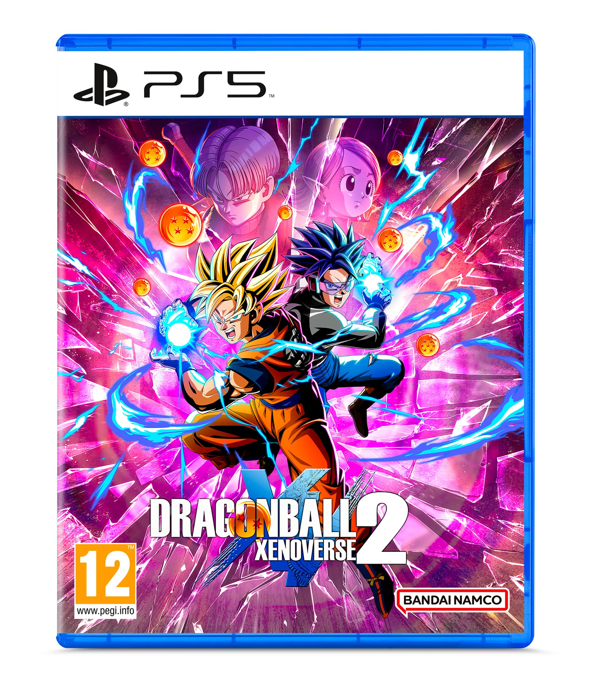
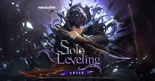
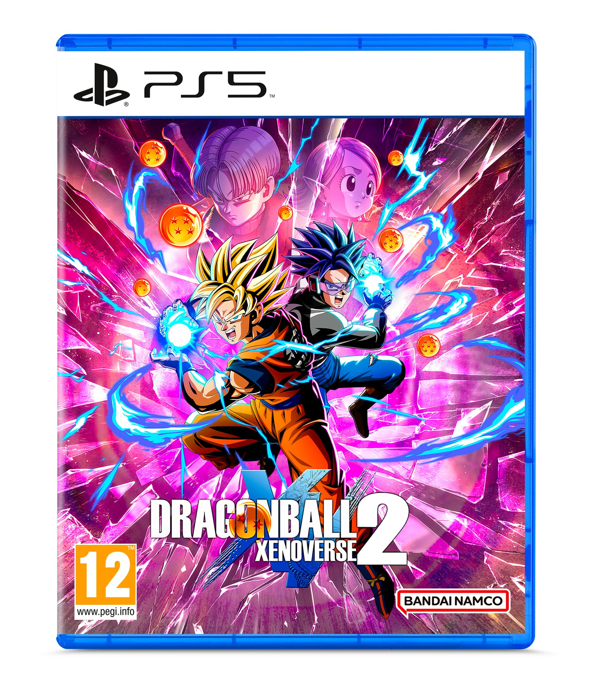
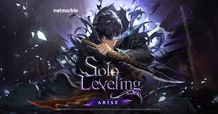

Presentation :

Alan D. 21 ans, née le 09/01/2004, il est actuellement en formation de développeur web à La Toile em-lyon. Il n'a pas particulièrement de couleur préférer mais il aime bien le vert et le bleu. Son animal favoris c'est le Raton Laveur
Parcours de vie
Alan a passer un CAP en Commerce/vente à erea de sorbiers en 2023 puis en 2024 il est aller à l'E2C pour trouver sa voie. Suite a cela il a fait 2 mois interim dans une usine de chocolat.
Hobbies :
Jeux Vidéos :
Alan joue beaucoup a des jeux video, principalement sur PC mais aussi sur PlayStation 5 quelque fois.
- GTA V
- Genshin Impact
- Dragon Ball Xénoverse 2
- Solo Leveling Arise
- ....

 



Les Animés :
Alan regarde beaucoup d'anime, en voici quelque-un qu'il préfère :
Dessin
Alan adore dessiner
Musiques :
Alan écoute de tout style de musique mais principalement des OST/openning d'anime.